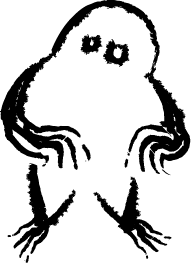

worry not!
> learn the mystical mechanics of the site to aid in your quest

> learn the mystical mechanics of the site to aid in your quest

Wazlini's Wizardly Whimsies is a short adventure styled after the early internet and 90s point and click games wherein a wizard merchant gives you quests.
After Wazlini's Introduction, you may select his various trinkets and search the site for hidden words to whisper to the Orb by typing them into the text box.
Upon giving the word to the orb, you progress the quest! There are a total of 8 Magic Words.
Magic words will generally look like " This "
Some puzzles can be a bit obscure so if you are stuck please feel free to peruse the hints below, but be warned: you may lose some of the magic by spoiling the solutions.
To erase your progress and reset the quest, use the tickbox and click the button below
Word 1.
Word 2.
Word 3.
Word 4.
Word 5.
Word 6.
Word 7.
Word 8.
A: Do not fret, your boundless adoration is enough.
A: Isn't the true liscence to sell dangerous magical goods, found in the heart?
A: Wazlini is not currently taking any apprentices but thank you for your interest!